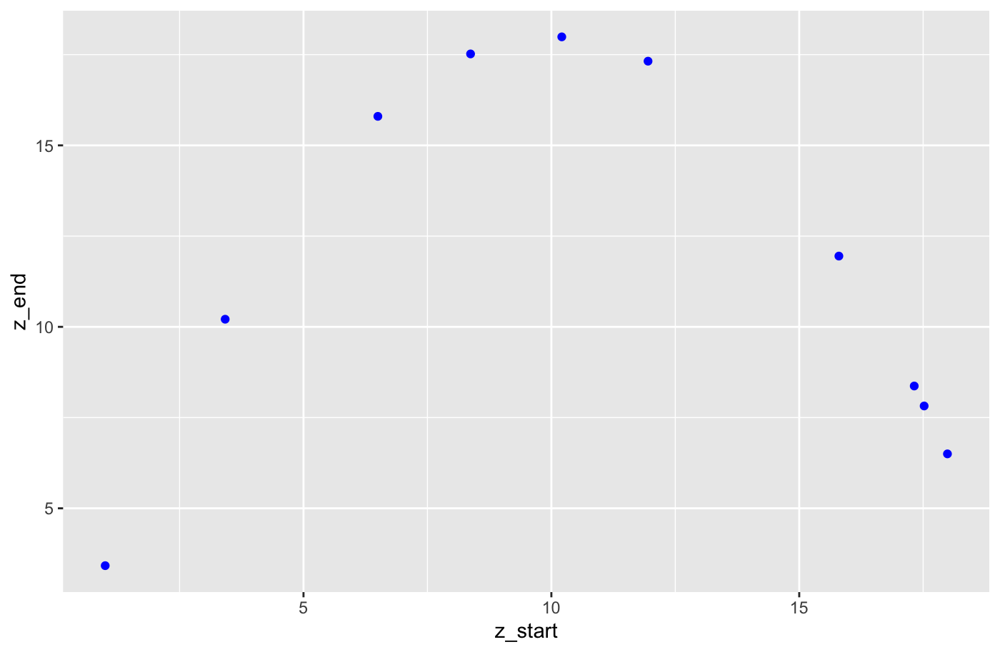
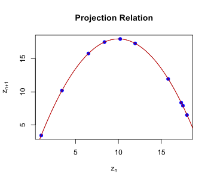
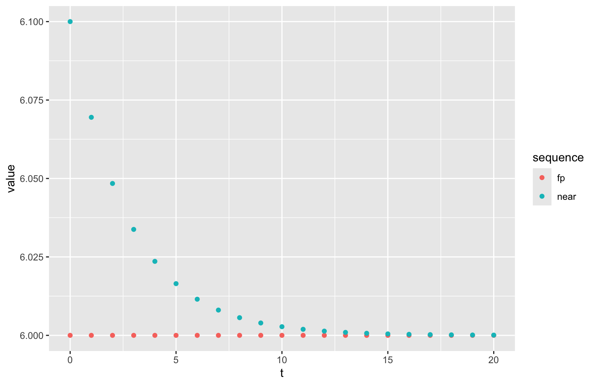

In the previous section, we considered a recursive formula for the new population in terms of the per capita net growth rate, \(r(P)\text{,}\) where the new population is computed by the difference equation
The basic idea to the difference equation is that \(r(P) \cdot P\) is the formula for the increment of change in the population, which is why that formula is added to the previous population.
In this section, we introduce an alternative way of thinking about computing the new population. In the above model, we effectively were thinking about the change in the population as a function of the previous population (specifically by thinking of the per capita rate as a function). We turn our attention now to thinking of the new population as itself being a function of the previous population. This function is called the projection function.
Subsection2.4.1Projection Functions
A sequence \(x=(x_n)\) is defined recursively if you have a formula to compute \(x_{n+1}\) in terms of the value for \(x_n\text{.}\) Generally, we have an equation that is solved for the new value in the form of
That is, the equation has been rewritten so that the new value is isolated on one side of the equation and is equal to some formula involving the previous value of the sequence. We then think of the formula involving \(x_n\) as a function of \(x_n\text{.}\) That function is named the projection function for the sequence because it allows us to project (i.e., forecast) the next value of the sequence knowing the current value in the sequence.
Example2.4.1.
The difference equation \(P_{n+1} - P_n = r P_n\) with an initial value defines a sequence recursively. This is the model for constant per capita growth rates. If we solve this equation for \(P_{n+1}\text{,}\)
\begin{equation*}
P_{n+1} = P_n + r P_n\text{,}
\end{equation*}
we think of the right hand side as the projection function, \(f(P_n) = P_n + r P_n\text{.}\) In terms of a simple variable (change \(P_n\) to \(x\)), the projection function is defined by
We saw earlier that this sequence results in geometric sequences that grow or decay exponentially. If we generate this sequence \(P = (P_0, P_1, P_2, \ldots)\) and look at the relation \((P_n, P_{n+1})\text{,}\) all of those points are on the graph of the projection function \(y=(1+r)x\text{.}\) The following code generates the sequence recursively and demonstrates this relation.
library(tidyr) # for tibble
library(ggplot2) # for ggplot
# Set values for the model parameters and initial value
r <- 0.25
P0 <- 10
# Specify the size of the sequence and create space in memory
num_pts <- 50
P <- double(num_pts)
# Generate the sequence
P[1] <- P0
for (n in 2:num_pts) {
P[n] <- (1+r) * P[n-1]
}
# Store as P_start and P_end
seq_data <- tibble(P_start = P[1:(num_pts-1)],
P_end=P[2:num_pts])
# Generate a graph of the projection function
# Create x-values between 0 and the largest value of P in our data
x_vals <- seq(from=0, to=max(P), length=500)
# Vectorized calculation of y = f(x)
y_vals <- (1+r)*x_vals
# Create a plot with sequential values (P_n,P_(n+1)) and y=f(x)
ggplot(data = NULL, # different data for different layers
mapping = aes(x = P_start, y = P_end, color = "sequence")) +
geom_point(data = seq_data, size=3) +
geom_path(mapping = aes(x = x_vals, y = y_vals, color = "projection")) +
scale_color_manual(values=c("sequence"="blue", "projection"="black"))
Listing2.4.2.
Example2.4.3.
The difference equation \(P_{n+1} - P_n = (r_0 - a P_n) P_n\) is the difference equation perspective for the discrete logistic model. Solving this equation for \(P_{n+1}\) gives
The projection function must therefore be \(f(P_n) = (1+r_0) P_n - a P_n^2\text{.}\) More simply written, the projection function for the discrete logistic model is
\begin{equation*}
f(x) = (1+r_0) x - ax^2\text{.}
\end{equation*}
Again, if we generate a sequence to follow this model, each point in the relation \((P_n, P_{n+1})\) will be on the graph of the projection function \(y=f(x)\text{.}\)
library(tidyr) # for tibble
library(ggplot2) # for ggplot
# Set values for the model parameters and initial value
r0 <- 0.4
a <- 0.001
P0 <- 10
# Specify the size of the sequence and create space in memory
num_pts <- 50
P <- double(num_pts)
# Generate the sequence
P[1] <- P0
for (n in 1:(num_pts-1)) {
P[n+1] <- (1+r0) * P[n] - a * P[n]^2
}
# Store as P_start and P_end
seq_data <- tibble(P_start = P[1:(num_pts-1)],
P_end=P[2:num_pts])
# Generate a graph of the projection function
# Create x-values between 0 and the largest value of P in our data
x_vals <- seq(from=0, to=max(P), length=500)
# Vectorized calculation of y = f(x)
y_vals <- (1+r0) * x_vals - a * x_vals^2
# Create a plot with sequential values (P_n,P_(n+1)) and y=f(x)
ggplot(data = NULL, # different data for different layers
mapping = aes(x = P_start, y = P_end, color = "sequence")) +
geom_point(data = seq_data, size=3) +
geom_path(mapping = aes(x = x_vals, y = y_vals, color = "projection")) +
scale_color_manual(values=c("sequence"="blue", "projection"="black"))
Listing2.4.4.
Example2.4.5.
Not all recursive sequences have biological motivations. In Calculus, Newton’s method is frequently taught as a way to find the positive square root of any positive number \(a \gt 0\text{.}\) The square root \(\sqrt{a}\) is the positive solution to \(x^2-a=0\text{.}\) Newton’s method involves creating a sequence using the recursive equation
\begin{equation*}
x_n^2 - a + 2x_n(x_{n+1}-x_n) = 0\text{.}
\end{equation*}
Solving this equation for \(x_{n+1}\text{,}\) we find the equation that writes \(x_{n+1}\) as a function of \(x_n\text{,}\)
The sequence generated in the code below solves for \(\sqrt{3}\) by using \(a=3\text{.}\) The initial value was chosen as \(a=1\text{.}\) The relation \((x_n, x_{n+1})\) is graphed along with \(y=f(x)\text{.}\) The method converges very quickly, so not many distinct points appear.
library(tidyr) # for tibble
library(ggplot2) # for ggplot
# Set values for the model parameters and initial value
a <- 3
x0 <- 1
# Specify the size of the sequence and create space in memory
num_pts <- 20
newton <- double(num_pts)
# Generate the sequence
newton[1] <- x0
for (n in 1:(num_pts-1)) {
newton[n+1] <- newton[n]/2 + a/(2 * newton[n])
}
# Store as x_start and x_end
seq_data <- tibble(x_start = newton[1:(num_pts-1)],
x_end=newton[2:num_pts])
# Generate a graph of the projection function
# Create x-values between 0 and the largest value of P in our data
x_vals <- seq(from=min(newton), to=max(newton), length=200)
# Vectorized calculation of y = f(x)
y_vals <- x_vals / 2 + a / (2 * x_vals)
# Create a plot with sequential values (P_n,P_(n+1)) and y=f(x)
ggplot(data = NULL, # different data for different layers
mapping = aes(x = x_start, y = x_end, color = "sequence")) +
geom_point(data = seq_data, size=3) +
geom_path(mapping = aes(x = x_vals, y = y_vals, color = "projection")) +
scale_color_manual(values=c("sequence"="blue", "projection"="black"))
Listing2.4.6.
In each of our examples above, we started with sequences defined recursively and showed that the relation \((x_n, x_{n+1})\) always matched the graph \(y=f(x)\) for the projection function \(f\text{.}\)` The projection function is the rule that when given the value of \(x_n\text{,}\) we can predict the value of \(x_{n+1} = f(x_n)\text{.}\) From a modeling perspective, we find projection functions by looking at the relation given by the scatter plot of \((x_n, x_{n+1})\) when data are available and find an appropriate function. When data are not available, we can construct hypotheses for the relation and build an appropriate model to explore the behavior if such a model were relevant.
Example2.4.7.
The table below gives the values of a sequence \(z_n\) for \(n=0,\ldots,10\text{.}\) Analyze the data to find a reasonable projection function.
Table2.4.8.
\(n\)
\(z_n\)
\(0\)
\(1.00\)
\(1\)
\(3.42\)
\(2\)
\(10.21\)
\(3\)
\(17.99\)
\(4\)
\(6.50\)
\(5\)
\(15.80\)
\(6\)
\(11.95\)
\(7\)
\(17.32\)
\(8\)
\(8.37\)
\(9\)
\(17.52\)
\(10\)
\(7.82\)
Solution.
We start by creating a plot of the projection relation, corresponding to a scatter plot of points \((z_n,z_{n+1})\text{.}\) When \(n=0\text{,}\) we have \((z_0,z_1) = (1.0, 3.42)\text{.}\) The next few points are expressed below:
We can create this graph in R using the following script. Our original set of data had index values \(n=0, 1, \ldots, 10\text{,}\) which corresponds to 11 points. However, when we think of our data as values before/after, there can be at most 10 pairs. The code below defines columns that use a subset of the entries.
library(tidyr)
library(ggplot2)
# Create the sequence vector directly
z <- c(1.00, 3.42, 10.21, 17.99, 6.50, 15.80, 11.95, 17.32, 8.37, 17.52, 7.82)
N <- length(z)
# z_start has all but the last value; z_end has all but the first value
z_data <- tibble(z_start = z[1:N-1], z_end = z[2:N])
# Graph the relation
ggplot(data = z_data,
mapping = aes(x = z_start, y = z_end)) +
geom_point(color="blue")
Listing2.4.9.

Figure2.4.10.
The figure strongly suggests the shape of a parabola so that the relation likely involves a quadratic formula. A quadratic function has the form \(f(x) = ax^2 + bx + c\text{,}\) which we could rewrite in the form \(f(x) = c + bx + ax^2\text{.}\) This can be interpreted as a linear model with a \(y\)-intercept \(c\) and two explanatory variables coming from \(x\) and \(x^2\text{.}\) We can continue our script to estimate the coefficients for the model by using lm with formula = y ~ x + x2 where x2 is going to be an extra column defined by x2 = x^2. Add the following code to the script defined above or after having already executed the code above.
# Add new columns to z_data
library(dplyr)
z_data |>
mutate(z = z_start) |> # z is a simpler name than z_start
mutate(z2 = z^2) ->
z_data2
# Do linear model
z_model <- lm(formula = z_end ~ z + z2, data = z_data2)
z_model$coefficients
Listing2.4.11.
(Intercept) z z2
0.0005194086 3.6003271165 -0.1800141078
From the regression, we see that we have values \(a = -0.180014\text{,}\)\(b = 3.600327\text{,}\) and \(c = 0.0005194\text{.}\) Based on those values, we could construct a sequence using the recursive equation
Our original sequence data only showed two decimal places in the values, so we should think of our coefficients as having their own uncertainty. Let’s compare what happens with the sequence using those estimated values with another sequence using the very similar \(u_{n+1} = 3.6 u_n - 0.18 u_n^2\text{.}\) The code below also illustrates how we can format a table.
# Model parameters
a <- -0.180014
a2 <- -0.18
b <- 3.600327
b2 <- 3.6
c <- 0.0005194
# Initial value
z0 <- 1.00
num_pts <- 10
# Build the sequences z and u
z <- double(num_pts + 1)
u <- double(num_pts + 1)
z[1] <- z0
u[1] <- z0
for (n in 1:num_pts) {
z[n+1] <- c + b * z[n] + a * z[n]^2
u[n+1] <- b2 * u[n] + a2 * u[n]^2
}
# Layout a table showing the values
my_data <- tibble(t = 0:num_pts, z = z, u = u)
print(my_data)
Perhaps surprisingly, the rounded model did better than the fitted values. Why would this happen? The actual values of the original sequence, which I generated with a computer using the simplified parameters, were rounded in order to present them with two decimal places. Thus our starting sequence had built-in errors. When we calculated our parameters using the linear model, we did in fact find the model that matched our results with the least squared errors for the rounded sequence. However, the fitted equation did not reproduce the sequence because it actually models a nearby sequence. If we had worked with more decimal values in the original sequence, we would have found a closer model.
To close the topic, the two projection functions will be visually indistinguishable in a figure. So the code below generates the graph of the original sequence as points coupled with a smooth graph showing the projection function.
library(tidyr) # for tibble
library(ggplot2) # for ggplot
# Original sequence
z <- c(1.00, 3.42, 10.21, 17.99, 6.50, 15.80, 11.95, 17.32, 8.37, 17.52, 7.82)
# Create the before/after pairings
z_proj_data <- tibble(z_start = z[1:10], z_end = z[2:11])
# Data for the projection function
x <- seq(from = 0, to = 20, length=200)
y <- 3.6 * x - 0.18 * x^2
# Create a plot with sequential values (P_n,P_(n+1)) and y=f(x)
ggplot(data = NULL, # different data for different layers
mapping = aes(x = z_start, y = z_end, color = "sequence")) +
geom_point(data = z_proj_data, size=3) +
geom_path(mapping = aes(x = x, y = y, color = "projection")) +
scale_color_manual(values=c("sequence"="blue", "projection"="black"))
Listing2.4.13.

Figure2.4.14.
Subsection2.4.2Fixed Points and Equilibria
An equilibrium represents a state of balance. For example, in chemistry, an equilibrium in a chemical reaction means that there is a balance between the reaction rates that create a chemical and those that use the chemical. It is not that nothing is happening, but that the creation and loss are perfectly balanced.
A population can also be in equilibrium if the sources of all growth in the population is exactly balanced by the sources of all loss. That is, the rate of birth and immigration in a population would need to be exactly balanced by the rate of death and emigration. The effect of this balance is that the sequence is constant, namely that
When a population is modeled by a projection function, \(P_{n+1} = f(P_n)\text{,}\) we can test whether an equilibrium is possible by seeing whether the equation \(x=f(x)\) has any solutions. That is, since \(P_{n+1}=P_n\) is true for an equilibrium, we are looking for all values of \(x\) that might be used for the sequence \(P_n=x\text{.}\) We call solutions to the equation \(x=f(x)\) the fixed points of the function \(f(x)\text{.}\)
Example2.4.15.
Recall that Newton’s method for finding the square root \(\sqrt{a}\) introduced the projection function
Find the projection function and identify possible equilibria for this population.
Solution.
The per capita net growth rate is related to the change in the population through births and deaths: \(B-D = r(P) \cdot P\text{.}\) As a difference equation, the population can be modeled as
The fixed point equation \(x=f(x)\) allows us to find all fixed points (and therefore possible equilibria of the population). We solve the equation by factoring:
By factoring an equation equal to zero, we find either \(x=0\) (a fixed point) or \(0.12-0.0004x=0\) (a simpler equation to find another fixed point). The other fixed point is \(x=\frac{0.12}{0.0004} = 300\text{.}\) So the possible equilibria for this population model are the values \(P=0\) or \(P=300\text{.}\) (Notice how we interpreted in the context of the state variable \(P\) rather than the fixed point variable \(x\text{.}\))
A sequence that starts at a fixed point will lead to a constant sequence, holding steady at the same value indefinitely. If the initial value of the sequence is not a fixed point, then next value will definitely be different and it can be challenging to predict in advance whether the sequence will eventually converge or not. Whether a sequence converges to a fixed point depends significantly on whether the fixed point is stable or unstable.
A fixed point is locally stable if every sequence that starts sufficiently close to the fixed point will always converge to the fixed point. Often, the sequence does not need to start very close at all to converge to a stable fixed point. However, a fixed point is locally unstable if regardless of how close you look, there will be at least one nearby initial value that results in a sequence that moves further away from the fixed point instead. That sequence might eventually return to this or another fixed point, but we only care if it initially moves away. For now, we will just look at the values of nearby sequences and see if they converge or not.
Example2.4.17.
Find the fixed points for the projection function \(f(x) = 1.3x - 0.05x^2\text{.}\) Use numerical evidence to determine if each fixed point is locally stable or unstable.
Solution.
We start by looking for fixed points algebraically. A fixed point is a solution to the equation \(x = f(x)\text{.}\) Using the formula of the projection function, the relevant equation is
\begin{equation*}
x = 1.3x - 0.05x^2\text{.}
\end{equation*}
Even though \(x\) is a common factor, avoid the temptation to divide it out. This is a sure-fire way to lose an important solution. Instead, it is better to adopt a strategy solving \(f(x)-x = 0\) using factoring.
From this factored equation, we see solutions occur when \(x=0\) or when \(0.3 - 0.05x = 0\text{.}\) That is, \(x=0\) is one fixed point. Solving \(0.3-0.05x = 0\) results in a second fixed point \(x = 6\text{.}\)
To see if a fixed point is locally stable or unstable, we can get some numerical intuition by looking at sequence solutions that start relatively close to the fixed point. The first constructed sequence will look at the fixed point \(x=0\text{.}\)
N <- 20 # Number of values we calculate
# One sequence will have the fixed point as initial value
fp_seq <- double(N+1)
# Another sequence will be close
nearby_seq <- double(N+1)
# Define a projection function as a function
project_fcn <- function(x) { 1.3*x - 0.05*x^2 }
# Do two sequences at the same time
fp_seq[1] <- 0 # At the fixed point
nearby_seq[1] <- 0.1 # Just above the fixed point
for (n in 1:N) {
fp_seq[n+1] <- project_fcn( fp_seq[n] )
nearby_seq[n+1] <- project_fcn( nearby_seq[n] )
}
# Organize into a tibble dataframe so both can be plotted together
library(tidyr)
library(dplyr)
library(ggplot2)
seq_data <- tibble(t = 0:N, fp = fp_seq, nearby = nearby_seq)
# Combine fp and nearby into same common to be tidy style, then plot
pivot_longer(seq_data, cols = c(fp, nearby),
values_to = "value", names_to = "sequence") |>
ggplot(mapping = aes(x = t, y = value, color = sequence)) +
geom_point()
Listing2.4.18.
From the result, we see that the sequence that started just off the fixed point had sequence values the moved away from the fixed point sequence. This is strong evidence that the fixed point \(x=0\) is locally unstable. It is not definitive because this one example doesn’t show whether an even closer starting value might instead move toward the fixed point.
We next consider the fixed point at \(x=6\text{.}\) Again, we visualize the fixed point sequence along with a sequence that starts nearby.
N <- 20 # Number of values we calculate
# One sequence will have the fixed point as initial value
fp_seq <- double(N+1)
# Another sequence will be close
nearby_seq <- double(N+1)
# Define a projection function as a function
project_fcn <- function(x) { 1.3*x - 0.05*x^2 }
# Do two sequences at the same time
fp_seq[1] <- 6 # At the fixed point
nearby_seq[1] <- 6.1 # Just above the fixed point
for (n in 1:N) {
fp_seq[n+1] <- project_fcn( fp_seq[n] )
nearby_seq[n+1] <- project_fcn( nearby_seq[n] )
}
# Organize into a tibble dataframe so both can be plotted together
library(tidyr)
library(dplyr)
library(ggplot2)
seq_data <- tibble(t = 0:N, fp = fp_seq, nearby = nearby_seq)
# Combine fp and nearby into same common to be tidy style, then plot
pivot_longer(seq_data, cols = c(fp, nearby),
values_to = "value", names_to = "sequence") |>
ggplot(mapping = aes(x = t, y = value, color = sequence)) +
geom_point()
Listing2.4.19.

In this case, we see that the sequence that started just off the fixed point had sequence values the moved toward the fixed point sequence. This is strong evidence that the fixed point \(x=0\) might be locally stable. It is not definitive all sequences that start sufficiently close need to demonstrate this behavior. We are only able to inspect a few at a time through graphs.
We will want a more definitive approach to determining whether fixed points are locally stable or unstable. The next section will demonstrate how the derivative of the projection function contains the necessary information to make this decision.